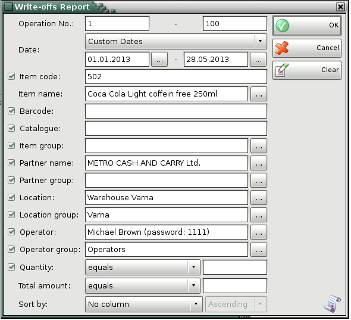
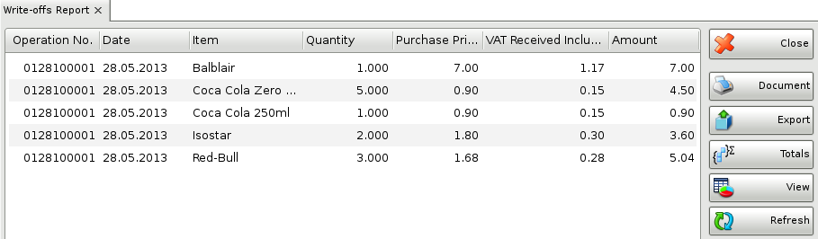

Write-off report
The Write-off Report displays write-off documents by rows, where each item is displayed in a separate row. You can use the report to track actual data input by documents, by users, by dates, etc. without summarizing documents. Each row in the documents corresponds to a row in the report.
In the first window of the report specify the filter criteria and the fields that will be visualized.
Only rows that are checked are visualized in the report.

You can choose a filter for each field by pressing the F4 key.
You can limit the report to a single criterion � for example, visualize write-off of a single item, or you can apply several criteria at a time � for example, visualize waste of a particular item from a particular location for a particular period of time
Select a sorting criterion from the Sort by drop-down list. You can choose between document date, item name and item code.
If you are working with lots, the application will add filters about the lot number, serial number, production date, expiration date and lot location.
To remove all specified filters, click the Clear button. The report will display all operations without any restrictions.
Click the OK button to generate the report using the specified criteria. Click Cancel to close the window.

The write-off report contains data about quantities that were written-off. It shows the document number, the date, the amount, the location and the user, who performed the operation.
Close button closes the report, Document button is used for report print preview, button Export to exports the report to CSV, Excel, Web Page or XML Data format and Totals button adds a line at the bottom of the window, that contains quantities and values amounts for each column.
�2006-2015 Microinvest, All rights reserved